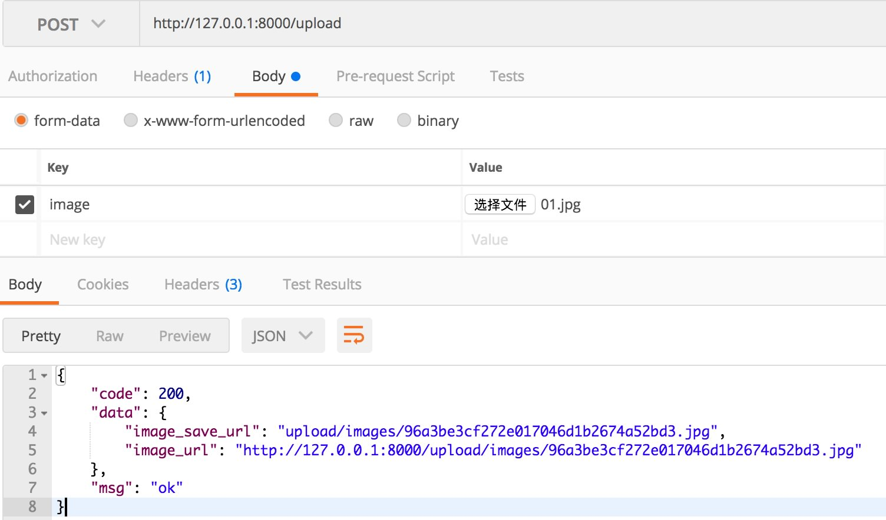
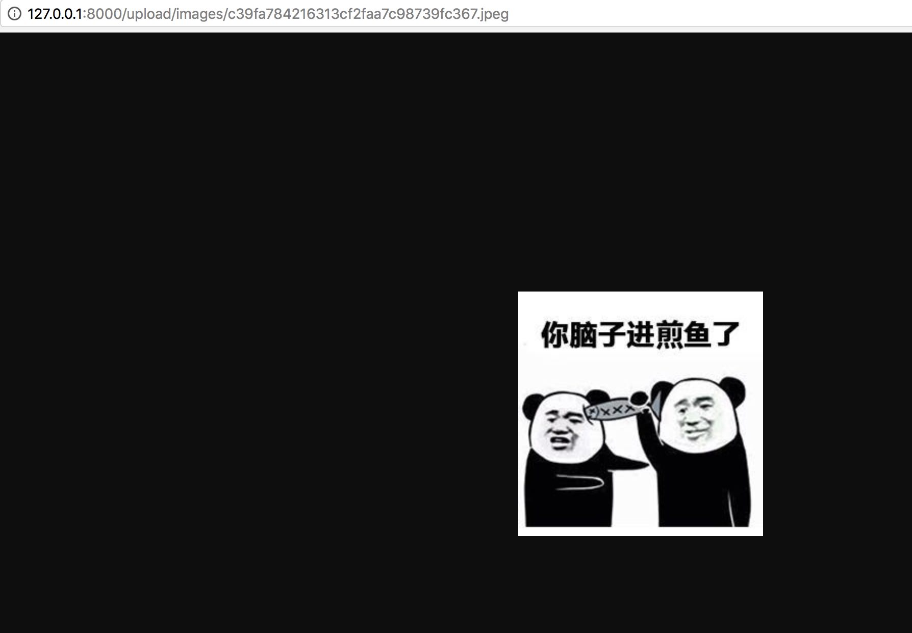

3.12 最佳化設定結構及實作圖片上傳
專案地址：https://github.com/EDDYCJY/go-gin-example
知識點
- 重構、調整結構
本文目標
這個應用程式跑了那麼久了，越來越大，越來越壯，彷彿我們的產品一樣，現在它需要進行小範圍重構了，以便於後續的使用，這非常重要。
前言
一天，產品經理突然跟你說文章列表，沒有封面圖，不夠美觀，！）&￥！&）#&￥！加一個吧，幾分鐘的事
你開啟你的程式，分析了一波寫了個清單：
- 最佳化設定結構（因為設定項越來越多）
- 抽離 原 logging 的 File 便於公用（logging、upload 各保有一份並不合適）
- 實作上傳圖片介面（需限制檔案格式、大小）
- 修改文章介面（需支援封面地址引數）
- 增加 blog_article （文章）的資料庫欄位
- 實作 http.FileServer
嗯，你發現要較優的話，需要調整部分的應用程式結構，因為功能越來越多，原本的設計也要跟上節奏
也就是在適當的時候，及時最佳化
最佳化設定結構
一、講解
在先前章節中，採用了直接讀取 KEY 的方式去儲存設定項，而本次需求中，需要增加圖片的設定項，總體就有些冗餘了
我們採用以下解決方法：
- 對映結構體：使用 MapTo 來設定設定引數
- 設定統管：所有的設定項統管到 setting 中
對映結構體（示例）
在 go-ini 中可以採用 MapTo 的方式來對映結構體，例如：
type Server struct {
RunMode string
HttpPort int
ReadTimeout time.Duration
WriteTimeout time.Duration
}
var ServerSetting = &Server{}
func main() {
Cfg, err := ini.Load("conf/app.ini")
if err != nil {
log.Fatalf("Fail to parse 'conf/app.ini': %v", err)
}
err = Cfg.Section("server").MapTo(ServerSetting)
if err != nil {
log.Fatalf("Cfg.MapTo ServerSetting err: %v", err)
}
}
在這段程式碼中，可以注意 ServerSetting 取了地址，為什麼 MapTo 必須地址入參呢？
// MapTo maps section to given struct.
func (s *Section) MapTo(v interface{}) error {
typ := reflect.TypeOf(v)
val := reflect.ValueOf(v)
if typ.Kind() == reflect.Ptr {
typ = typ.Elem()
val = val.Elem()
} else {
return errors.New("cannot map to non-pointer struct")
}
return s.mapTo(val, false)
}
在 MapTo 中 typ.Kind() == reflect.Ptr 約束了必須使用指標，否則會返回 cannot map to non-pointer struct 的錯誤。這個是表面原因
更往內探究，可以認為是 field.Set 的原因，當執行 val := reflect.ValueOf(v) ，函式透過傳遞 v 複製建立了 val，但是 val 的改變並不能更改原始的 v，要想 val 的更改能作用到 v，則必須傳遞 v 的地址
顯然 go-ini 裡也是包含修改原始值這一項功能的，你覺得是什麼原因呢？
設定統管
在先前的版本中，models 和 file 的設定是在自己的檔案中解析的，而其他在 setting.go 中，因此我們需要將其在 setting 中統一接管
你可能會想，直接把兩者的設定項複製貼上到 setting.go 的 init 中，一下子就完事了，搞那麼麻煩？
但你在想想，先前的程式碼中存在多個 init 函式，執行順序存在問題，無法達到我們的要求，你可以試試
（此處是一個基礎知識點）
在 Go 中，當存在多個 init 函式時，執行順序為：
- 相同包下的 init 函式：按照原始檔編譯順序決定執行順序（預設按檔名排序）
- 不同包下的 init 函式：按照包匯入的依賴關係決定先後順序
所以要避免多 init 的情況，儘量由程式把控初始化的先後順序
二、落實
修改設定檔案
開啟 conf/app.ini 將設定檔案修改為大駝峰命名，另外我們增加了 5 個設定項用於上傳圖片的功能，4 個檔案日誌方面的設定項
[app]
PageSize = 10
JwtSecret = 233
RuntimeRootPath = runtime/
ImagePrefixUrl = http://127.0.0.1:8000
ImageSavePath = upload/images/
# MB
ImageMaxSize = 5
ImageAllowExts = .jpg,.jpeg,.png
LogSavePath = logs/
LogSaveName = log
LogFileExt = log
TimeFormat = 20060102
[server]
#debug or release
RunMode = debug
HttpPort = 8000
ReadTimeout = 60
WriteTimeout = 60
[database]
Type = mysql
User = root
Password = rootroot
Host = 127.0.0.1:3306
Name = blog
TablePrefix = blog_
最佳化設定讀取及設定初始化順序
第一步
將散落在其他檔案裡的設定都刪掉，統一在 setting 中處理以及修改 init 函式為 Setup 方法
開啟 pkg/setting/setting.go 檔案，修改如下：
package setting
import (
"log"
"time"
"github.com/go-ini/ini"
)
type App struct {
JwtSecret string
PageSize int
RuntimeRootPath string
ImagePrefixUrl string
ImageSavePath string
ImageMaxSize int
ImageAllowExts []string
LogSavePath string
LogSaveName string
LogFileExt string
TimeFormat string
}
var AppSetting = &App{}
type Server struct {
RunMode string
HttpPort int
ReadTimeout time.Duration
WriteTimeout time.Duration
}
var ServerSetting = &Server{}
type Database struct {
Type string
User string
Password string
Host string
Name string
TablePrefix string
}
var DatabaseSetting = &Database{}
func Setup() {
Cfg, err := ini.Load("conf/app.ini")
if err != nil {
log.Fatalf("Fail to parse 'conf/app.ini': %v", err)
}
err = Cfg.Section("app").MapTo(AppSetting)
if err != nil {
log.Fatalf("Cfg.MapTo AppSetting err: %v", err)
}
AppSetting.ImageMaxSize = AppSetting.ImageMaxSize * 1024 * 1024
err = Cfg.Section("server").MapTo(ServerSetting)
if err != nil {
log.Fatalf("Cfg.MapTo ServerSetting err: %v", err)
}
ServerSetting.ReadTimeout = ServerSetting.ReadTimeout * time.Second
ServerSetting.WriteTimeout = ServerSetting.ReadTimeout * time.Second
err = Cfg.Section("database").MapTo(DatabaseSetting)
if err != nil {
log.Fatalf("Cfg.MapTo DatabaseSetting err: %v", err)
}
}
在這裡，我們做了如下幾件事：
- 編寫與設定項保持一致的結構體（App、Server、Database）
- 使用 MapTo 將設定項對映到結構體上
- 對一些需特殊設定的設定項進行再賦值
需要你去做的事：
- 將 models.go、setting.go、pkg/logging/log.go 的 init 函式修改為 Setup 方法
- 將 models/models.go 獨立讀取的 DB 設定項刪除，改為統一讀取 setting
- 將 pkg/logging/file 獨立的 LOG 設定項刪除，改為統一讀取 setting
這幾項比較基礎，並沒有貼出來，我希望你可以自己動手，有問題的話可右拐 專案地址
第二步
在這一步我們要設定初始化的流程，開啟 main.go 檔案，修改內容：
func main() {
setting.Setup()
models.Setup()
logging.Setup()
endless.DefaultReadTimeOut = setting.ServerSetting.ReadTimeout
endless.DefaultWriteTimeOut = setting.ServerSetting.WriteTimeout
endless.DefaultMaxHeaderBytes = 1 << 20
endPoint := fmt.Sprintf(":%d", setting.ServerSetting.HttpPort)
server := endless.NewServer(endPoint, routers.InitRouter())
server.BeforeBegin = func(add string) {
log.Printf("Actual pid is %d", syscall.Getpid())
}
err := server.ListenAndServe()
if err != nil {
log.Printf("Server err: %v", err)
}
}
修改完畢後，就成功將多模組的初始化函式放到啟動流程中了（先後順序也可以控制）
驗證
在這裡為止，針對本需求的設定最佳化就完畢了，你需要執行 go run main.go 驗證一下你的功能是否正常哦
順帶留個基礎問題，大家可以思考下
ServerSetting.ReadTimeout = ServerSetting.ReadTimeout * time.Second
ServerSetting.WriteTimeout = ServerSetting.ReadTimeout * time.Second
若將 setting.go 檔案中的這兩行刪除，會出現什麼問題，為什麼呢？
抽離 File
在先前版本中，在 logging/file.go 中使用到了 os 的一些方法，我們透過前期規劃發現，這部分在上傳圖片功能中可以複用
第一步
在 pkg 目錄下新建 file/file.go ，寫入檔案內容如下：
package file
import (
"os"
"path"
"mime/multipart"
"io/ioutil"
)
func GetSize(f multipart.File) (int, error) {
content, err := ioutil.ReadAll(f)
return len(content), err
}
func GetExt(fileName string) string {
return path.Ext(fileName)
}
func CheckExist(src string) bool {
_, err := os.Stat(src)
return os.IsNotExist(err)
}
func CheckPermission(src string) bool {
_, err := os.Stat(src)
return os.IsPermission(err)
}
func IsNotExistMkDir(src string) error {
if notExist := CheckNotExist(src); notExist == true {
if err := MkDir(src); err != nil {
return err
}
}
return nil
}
func MkDir(src string) error {
err := os.MkdirAll(src, os.ModePerm)
if err != nil {
return err
}
return nil
}
func Open(name string, flag int, perm os.FileMode) (*os.File, error) {
f, err := os.OpenFile(name, flag, perm)
if err != nil {
return nil, err
}
return f, nil
}
在這裡我們一共封裝了 7個 方法
- GetSize：取得檔案大小
- GetExt：取得檔案字尾
- CheckExist：檢查檔案是否存在
- CheckPermission：檢查檔案許可權
- IsNotExistMkDir：如果不存在則新建資料夾
- MkDir：新建資料夾
- Open：開啟檔案
在這裡我們用到了 mime/multipart 包，它主要實作了 MIME 的 multipart 解析，主要適用於 HTTP 和常見瀏覽器生成的 multipart 主體
multipart 又是什麼，rfc2388 的 multipart/form-data 瞭解一下
第二步
我們在第一步已經將 file 重新封裝了一層，在這一步我們將原先 logging 包的方法都修改掉
1、開啟 pkg/logging/file.go 檔案，修改檔案內容：
package logging
import (
"fmt"
"os"
"time"
"github.com/EDDYCJY/go-gin-example/pkg/setting"
"github.com/EDDYCJY/go-gin-example/pkg/file"
)
func getLogFilePath() string {
return fmt.Sprintf("%s%s", setting.AppSetting.RuntimeRootPath, setting.AppSetting.LogSavePath)
}
func getLogFileName() string {
return fmt.Sprintf("%s%s.%s",
setting.AppSetting.LogSaveName,
time.Now().Format(setting.AppSetting.TimeFormat),
setting.AppSetting.LogFileExt,
)
}
func openLogFile(fileName, filePath string) (*os.File, error) {
dir, err := os.Getwd()
if err != nil {
return nil, fmt.Errorf("os.Getwd err: %v", err)
}
src := dir + "/" + filePath
perm := file.CheckPermission(src)
if perm == true {
return nil, fmt.Errorf("file.CheckPermission Permission denied src: %s", src)
}
err = file.IsNotExistMkDir(src)
if err != nil {
return nil, fmt.Errorf("file.IsNotExistMkDir src: %s, err: %v", src, err)
}
f, err := file.Open(src + fileName, os.O_APPEND|os.O_CREATE|os.O_WRONLY, 0644)
if err != nil {
return nil, fmt.Errorf("Fail to OpenFile :%v", err)
}
return f, nil
}
我們將引用都改為了 file/file.go 包裡的方法
2、開啟 pkg/logging/log.go 檔案，修改檔案內容:
package logging
...
func Setup() {
var err error
filePath := getLogFilePath()
fileName := getLogFileName()
F, err = openLogFile(fileName, filePath)
if err != nil {
log.Fatalln(err)
}
logger = log.New(F, DefaultPrefix, log.LstdFlags)
}
...
由於原方法形參改變了，因此 openLogFile 也需要調整
實作上傳圖片介面
這一小節，我們開始實作上次圖片相關的一些方法和功能
首先需要在 blog_article 中增加欄位 cover_image_url，格式為 varchar(255) DEFAULT '' COMMENT '封面图片地址'
第零步
一般不會直接將上傳的圖片名暴露出來，因此我們對圖片名進行 MD5 來達到這個效果
在 util 目錄下新建 md5.go，寫入檔案內容：
package util
import (
"crypto/md5"
"encoding/hex"
)
func EncodeMD5(value string) string {
m := md5.New()
m.Write([]byte(value))
return hex.EncodeToString(m.Sum(nil))
}
第一步
在先前我們已經把底層方法給封裝好了，實質這一步為封裝 image 的處理邏輯
在 pkg 目錄下新建 upload/image.go 檔案，寫入檔案內容：
package upload
import (
"os"
"path"
"log"
"fmt"
"strings"
"mime/multipart"
"github.com/EDDYCJY/go-gin-example/pkg/file"
"github.com/EDDYCJY/go-gin-example/pkg/setting"
"github.com/EDDYCJY/go-gin-example/pkg/logging"
"github.com/EDDYCJY/go-gin-example/pkg/util"
)
func GetImageFullUrl(name string) string {
return setting.AppSetting.ImagePrefixUrl + "/" + GetImagePath() + name
}
func GetImageName(name string) string {
ext := path.Ext(name)
fileName := strings.TrimSuffix(name, ext)
fileName = util.EncodeMD5(fileName)
return fileName + ext
}
func GetImagePath() string {
return setting.AppSetting.ImageSavePath
}
func GetImageFullPath() string {
return setting.AppSetting.RuntimeRootPath + GetImagePath()
}
func CheckImageExt(fileName string) bool {
ext := file.GetExt(fileName)
for _, allowExt := range setting.AppSetting.ImageAllowExts {
if strings.ToUpper(allowExt) == strings.ToUpper(ext) {
return true
}
}
return false
}
func CheckImageSize(f multipart.File) bool {
size, err := file.GetSize(f)
if err != nil {
log.Println(err)
logging.Warn(err)
return false
}
return size <= setting.AppSetting.ImageMaxSize
}
func CheckImage(src string) error {
dir, err := os.Getwd()
if err != nil {
return fmt.Errorf("os.Getwd err: %v", err)
}
err = file.IsNotExistMkDir(dir + "/" + src)
if err != nil {
return fmt.Errorf("file.IsNotExistMkDir err: %v", err)
}
perm := file.CheckPermission(src)
if perm == true {
return fmt.Errorf("file.CheckPermission Permission denied src: %s", src)
}
return nil
}
在這裡我們實作了 7 個方法，如下：
- GetImageFullUrl：取得圖片完整訪問URL
- GetImageName：取得圖片名稱
- GetImagePath：取得圖片路徑
- GetImageFullPath：取得圖片完整路徑
- CheckImageExt：檢查圖片字尾
- CheckImageSize：檢查圖片大小
- CheckImage：檢查圖片
這裡基本是對底層程式碼的二次封裝，為了更靈活的處理一些圖片特有的邏輯，並且方便修改，不直接對外暴露下層
第二步
這一步將編寫上傳圖片的業務邏輯，在 routers/api 目錄下 新建 upload.go 檔案，寫入檔案內容:
package api
import (
"net/http"
"github.com/gin-gonic/gin"
"github.com/EDDYCJY/go-gin-example/pkg/e"
"github.com/EDDYCJY/go-gin-example/pkg/logging"
"github.com/EDDYCJY/go-gin-example/pkg/upload"
)
func UploadImage(c *gin.Context) {
code := e.SUCCESS
data := make(map[string]string)
file, image, err := c.Request.FormFile("image")
if err != nil {
logging.Warn(err)
code = e.ERROR
c.JSON(http.StatusOK, gin.H{
"code": code,
"msg": e.GetMsg(code),
"data": data,
})
}
if image == nil {
code = e.INVALID_PARAMS
} else {
imageName := upload.GetImageName(image.Filename)
fullPath := upload.GetImageFullPath()
savePath := upload.GetImagePath()
src := fullPath + imageName
if ! upload.CheckImageExt(imageName) || ! upload.CheckImageSize(file) {
code = e.ERROR_UPLOAD_CHECK_IMAGE_FORMAT
} else {
err := upload.CheckImage(fullPath)
if err != nil {
logging.Warn(err)
code = e.ERROR_UPLOAD_CHECK_IMAGE_FAIL
} else if err := c.SaveUploadedFile(image, src); err != nil {
logging.Warn(err)
code = e.ERROR_UPLOAD_SAVE_IMAGE_FAIL
} else {
data["image_url"] = upload.GetImageFullUrl(imageName)
data["image_save_url"] = savePath + imageName
}
}
}
c.JSON(http.StatusOK, gin.H{
"code": code,
"msg": e.GetMsg(code),
"data": data,
})
}
所涉及的錯誤碼（需在 pkg/e/code.go、msg.go 新增）：
// 保存图片失败
ERROR_UPLOAD_SAVE_IMAGE_FAIL = 30001
// 检查图片失败
ERROR_UPLOAD_CHECK_IMAGE_FAIL = 30002
// 校验图片错误，图片格式或大小有问题
ERROR_UPLOAD_CHECK_IMAGE_FORMAT = 30003
在這一大段的業務邏輯中，我們做了如下事情：
- c.Request.FormFile：取得上傳的圖片（返回提供的表單鍵的第一個檔案）
- CheckImageExt、CheckImageSize檢查圖片大小，檢查圖片字尾
- CheckImage：檢查上傳圖片所需（許可權、資料夾）
- SaveUploadedFile：儲存圖片
總的來說，就是 入參 -> 檢查 -》 儲存 的應用流程
第三步
開啟 routers/router.go 檔案，增加路由 r.POST("/upload", api.UploadImage) ，如：
func InitRouter() *gin.Engine {
r := gin.New()
...
r.GET("/auth", api.GetAuth)
r.GET("/swagger/*any", ginSwagger.WrapHandler(swaggerFiles.Handler))
r.POST("/upload", api.UploadImage)
apiv1 := r.Group("/api/v1")
apiv1.Use(jwt.JWT())
{
...
}
return r
}
驗證
最後我們請求一下上傳圖片的介面，測試所編寫的功能

檢查目錄下是否含檔案（注意許可權問題）
$ pwd
$GOPATH/src/github.com/EDDYCJY/go-gin-example/runtime/upload/images
$ ll
... 96a3be3cf272e017046d1b2674a52bd3.jpg
... c39fa784216313cf2faa7c98739fc367.jpeg
在這裡我們一共返回了 2 個引數，一個是完整的訪問 URL，另一個為儲存路徑
實作 http.FileServer
在完成了上一小節後，我們還需要讓前端能夠訪問到圖片，一般是如下：
- CDN
- http.FileSystem
在公司的話，CDN 或自建分散式檔案系統居多，也不需要過多關注。而在實踐裡的話肯定是本地搭建了，Go 本身對此就有很好的支援，而 Gin 更是再封裝了一層，只需要在路由增加一行程式碼即可
r.StaticFS
開啟 routers/router.go 檔案，增加路由 r.StaticFS("/upload/images", http.Dir(upload.GetImageFullPath()))，如：
func InitRouter() *gin.Engine {
...
r.StaticFS("/upload/images", http.Dir(upload.GetImageFullPath()))
r.GET("/auth", api.GetAuth)
r.GET("/swagger/*any", ginSwagger.WrapHandler(swaggerFiles.Handler))
r.POST("/upload", api.UploadImage)
...
}
它做了什麼
當訪問 $HOST/upload/images 時，將會讀取到 $GOPATH/src/github.com/EDDYCJY/go-gin-example/runtime/upload/images 下的檔案
而這行程式碼又做了什麼事呢，我們來看看方法原型
// StaticFS works just like `Static()` but a custom `http.FileSystem` can be used instead.
// Gin by default user: gin.Dir()
func (group *RouterGroup) StaticFS(relativePath string, fs http.FileSystem) IRoutes {
if strings.Contains(relativePath, ":") || strings.Contains(relativePath, "*") {
panic("URL parameters can not be used when serving a static folder")
}
handler := group.createStaticHandler(relativePath, fs)
urlPattern := path.Join(relativePath, "/*filepath")
// Register GET and HEAD handlers
group.GET(urlPattern, handler)
group.HEAD(urlPattern, handler)
return group.returnObj()
}
首先在暴露的 URL 中禁止了 * 和 : 符號的使用，透過 createStaticHandler 建立了靜態檔案服務，實質最終呼叫的還是 fileServer.ServeHTTP 和一些處理邏輯了
func (group *RouterGroup) createStaticHandler(relativePath string, fs http.FileSystem) HandlerFunc {
absolutePath := group.calculateAbsolutePath(relativePath)
fileServer := http.StripPrefix(absolutePath, http.FileServer(fs))
_, nolisting := fs.(*onlyfilesFS)
return func(c *Context) {
if nolisting {
c.Writer.WriteHeader(404)
}
fileServer.ServeHTTP(c.Writer, c.Request)
}
}
http.StripPrefix
我們可以留意下 fileServer := http.StripPrefix(absolutePath, http.FileServer(fs)) 這段語句，在靜態檔案服務中很常見，它有什麼作用呢？
http.StripPrefix 主要作用是從請求 URL 的路徑中刪除給定的字首，最終返回一個 Handler
通常 http.FileServer 要與 http.StripPrefix 相結合使用，否則當你執行：
http.Handle("/upload/images", http.FileServer(http.Dir("upload/images")))
會無法正確的訪問到檔案目錄，因為 /upload/images 也包含在了 URL 路徑中，必須使用：
http.Handle("/upload/images", http.StripPrefix("upload/images", http.FileServer(http.Dir("upload/images"))))
/*filepath
到下面可以看到 urlPattern := path.Join(relativePath, "/*filepath")，/*filepath 你是誰，你在這裡有什麼用，你是 Gin 的產物嗎?
透過語義可得知是路由的處理邏輯，而 Gin 的路由是基於 httprouter 的，透過查閱文件可得到以下資訊
Pattern: /src/*filepath
/src/ match
/src/somefile.go match
/src/subdir/somefile.go match
*filepath 將匹配所有檔案路徑，並且 *filepath 必須在 Pattern 的最後
驗證
重新執行 go run main.go ，去訪問剛剛在 upload 介面得到的圖片地址，檢查 http.FileSystem 是否正常

修改文章介面
接下來，需要你修改 routers/api/v1/article.go 的 AddArticle、EditArticle 兩個介面
- 新增、更新文章介面：支援入參 cover_image_url
- 新增、更新文章介面：增加對 cover_image_url 的非空、最長長度校驗
這塊前面文章講過，如果有問題可以參考專案的程式碼👌
總結
在這章節中，我們簡單的分析了下需求，對應用做出了一個小規劃並實施
完成了清單中的功能點和最佳化，在實際專案中也是常見的場景，希望你能夠細細品嚐並針對一些點進行深入學習
參考
本系列示例程式碼
關於
修改記錄
- 第一版：2018年02月16日釋出文章
- 第二版：2019年10月02日修改文章
？
如果有任何疑問或錯誤，歡迎在 issues 進行提問或給予修正意見，如果喜歡或對你有所幫助，歡迎 Star，對作者是一種鼓勵和推進。
我的微信公眾號